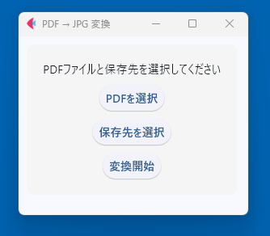

ソフトウェア名称：PDF TO SINGLEJPG
バージョン1.0.0
複数のページで構成されるPDFファイルを、ページごとにJPG画像データに切り出す変換アプリです。
用途は限定的ですが、JPEGファイルに切り出すことでPDFファイルに含まれるテキストデータなどを検索対象から外したり、PDFファイル自体のサムネイルを作成するような目的で利用するために作成しました。
変換ソフトは多数存在しますが、WEB上の無料ツールの場合のセキュリティ面の不安から、ローカルで完結するソフトウェアを作成しました。
簡易ツールのため、特にバージョンアップの予定はありません。
■ 免責事項（Disclaimer）
本ソフトウェアは「現状のまま（as is）」提供されるものであり、明示・黙示を問わず、商品性、特定目的への適合性、権利非侵害に関する黙示的な保証も含め、いかなる保証も行いません。 本ソフトウェアの使用または使用不能から生じるいかなる損害（直接的・間接的、偶発的、特別、結果的損害等を含む）についても、著作権者または著作権者に関係する者は一切の責任を負いません。 利用者は自己の責任において本ソフトウェアを使用するものとし、本ソフトウェアの使用によって発生した損害、データ損失、ビジネス中断などについて、著作権者は一切責任を負いません。
■ 概要
本アプリは、PDFファイルを1ページずつJPEG画像に変換するWindowsアプリです。
FletとPyMuPDFを使用しています。
■ 対応環境
- Windows 10 / 11 (64bit)
- Python不要（単体実行形式）
■ 使い方
- アプリを起動します（PDF_to_JPG.exe をダブルクリック）
- 「PDFを選択」ボタンで変換したいPDFファイルを選びます。
※ PDFファイルは1つのみ選択可能です。fletの仕様上、ドラッグ＆ドロップはできません。 - 「保存先を選択」で出力先フォルダを選びます（省略可：PDFと同じ場所になります）
- 「変換開始」ボタンを押すと、1ページずつJPEGファイルとして保存されます。
■ 出力形式
- ファイル名：
元のファイル名_page_1.jpgのように出力されます - 解像度：200dpi固定
■ 注意点
- PDFが保護されている場合は変換できないことがあります
- 出力先に既に同名のファイルがあると上書きされます
■ 作成者
Yuki Nemoto
https://github.com/yukinemoto1989/website
yknm1989@outlook.com
■ ライセンス
本アプリはフリーソフトウェアです。商用利用、再配布、改変が自由に可能です。ただし、使用しているライブラリのライセンス条件に従う必要があります。
■ ライセンスとソースコード
ソースコード公開先：
https://github.com/yukinemoto1989/pdf-to-singlejpg
本アプリは以下のオープンソースライブラリを使用しています。
- Flet
ライセンス：Apache License 2.0
条件：著作権表示およびライセンス文書の同梱が必要です。 - PyMuPDF
ライセンス：GNU General Public License v3（GPLv3）
条件：ソフトウェアの再配布時にはソースコードの公開が必要です。商用利用やクローズドソースでの利用には、別途 PyMuPDF の商用ライセンスが必要です。
本アプリは GPLv3 に準拠しており、ソースコード一式を同梱または公開しています。再配布・改変は自由ですが、GPLv3 の条件を遵守してください。
■ ダウンロード
ファイル名: PDF_to_JPG_v1.0.0.exe
SHA-256: 475a049752be807090a30850e4b652965eaec84b3a620d53f5b6ffda109a8f67